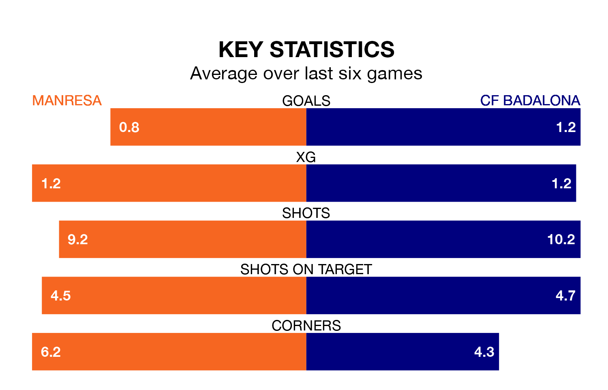

Mid-season relegation candidates Manresa face a challenge against high-flying CF Badalona on Sunday.
Manresa are 15th in the Segunda División RFEF Group 3 table, and have picked up five wins and seven draws in their 20 games to date.
Badalona, meanwhile, are third in the standings with 36 points, having won nine and drawn nine, and are three points behind table-toppers CE Europa.
With 17 goals in 20 games so far this season, Manresa are the league's third-lowest scorers with 0.8 goals per game. But they are conceding fewer than average too, letting in 20 goals at a rate of 1.0 per game.
Badalona, meanwhile, are average scorers, with 1.2 goals per game. They have conceded 0.7 goals per game.
The home team are in disappointing form in Segunda División RFEF Group 3, with one win and two draws from their last six games.
With two wins and four draws over that period, the visitors' form is better – they have taken 10 points from 18, compared to Manresa's five.
In the last three years, Manresa and Badalona have played each other on three occasions. Badalona won one of them and they drew the other.
Their last meeting was on September 24, when they played out a 0-0 draw.
Manresa's last match was on January 28, a 2-1 loss against Peña Deportiva.
Badalona beat Atlético Saguntino 2-1 last time out, on January 27.
Updated: 09:21 (UTC), 30/01/24